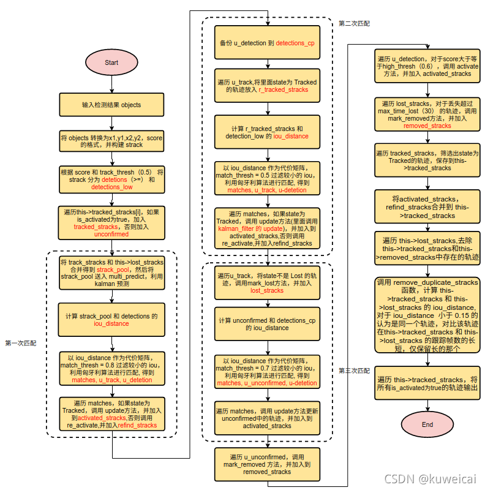

目标跟踪：ByteTrack 算法详解
本文档基于原始文件梳理多目标跟踪（MOT）任务的核心解题框架，聚焦于卡尔曼滤波与匈牙利算法的前置原理，并深入解析 ByteTrack 的关键二阶段关联策略。
一、目标跟踪基础与核心组件
目标跟踪任务核心本质
目标跟踪的根本问题就是认准当前画面内、目标框内的身份，是否还是初始状态时标记的那个同一 ID。这不是个静态找人的问题，而是个动态连线找人的问题。
卡尔曼滤波 (Kalman Filter) 状态预测机制
- 底层原理：一种处理有噪声数据的线性动态系统预测模型。在此语境内，它专门用来预测物体在录像帧之间的移动趋向。本质是基于正态分布体系下，输出单个最佳的估计状态。
- 预测更新流：给定目标现在的【框的长宽比、中心点位置】等先验，卡尔曼滤波会向下一帧投射一个预测位置。当新一帧出现了真实的检测框与之对应后，根据两者差异再次更新卡尔曼增益和协方差矩阵，紧接着接着预测下个未来框。通过这种吃反馈的滚动迭代来锁死目标。
匈牙利算法 (Hungarian) 最优代价匹配模型
- 多对多分配困境：上一帧的卡尔曼滤波对未来算出了 5 个预测框位置，但当前帧实际只检测到了 4 个高置信度实物框。此时谁属于谁需要严格计算。
- 创建代价矩阵：将每一对预测与实物组合排在一张大矩阵网格上。每一格填入结合两者的“代价”，通常代价等于两者的欧氏距离、马氏距离或者是 IoU(交并比)的负值（IoU越大，负值越表明代价越小）。
- 矩阵扣减运算：算法底层在矩阵上利用反复的行减法、列减法和线条覆盖消除等手段，去探寻全场成本开销总和最少的那单一映射路线。达成该帧宏观视角下的全局最优匹配连接，完美解决一对一归属权。
二、ByteTrack 创新架构与 BYTE 策略
ByteTrack 面向低置信度框的破局挽救优势
- 传统 SORT 的弊病：极其呆板，高度依赖高分框。一旦物体在这帧被灯柱遮挡或者因极速运动模糊，前端检测得分下降跌破及格线，SORT 就会将其直接视为背景丢弃，导致轨迹直接断代失效。
- 保留困难样本的直觉：ByteTrack 的最狠一招就是深刻理解了“被遮挡物体得分必定会经历由高到低的缓慢平滑衰减”。它强制挖掘出了所谓的低分垃圾框（遮挡模糊等困难样本），从中剔除了真背景，重新缝合进轨迹线。
BYTE 二次数据关联匹配具体执行流
通过引入一种简单高效的 BYTE 策略过滤法，网络彻底盘活了所有轨迹的生命力：

- 粗筛分堆：检测器在这帧吐出所有结果后，以固定阈值被当场劈成“高分框”和“低分框”两大阵营。
- 第一波匹配（精英对决）：利用上文的卡尔曼滤波（估算 IoU 相似度）和匈牙利算法，让这帧的【高分框】与【之前的跟踪轨迹】直接硬碰硬匹配。此时，肯定会有一些被遮挡目标对应的老旧轨迹落选（没分配到高分框）。
- 第二波匹配（难点捡漏）：让上面那些【在第一轮落选失联的老轨迹】，掉转枪头与【低分框队伍】进行第二轮匹配打捞。只要位置 IoU 对得上号，原本被视作背景的低分框马上会被复活并承接上一代 ID。
- 清理现场：
- 经过两轮都没匹配上的高分新框？视为画面新来客，新建一条全新跟踪轨迹。
- 两轮过后依然空手而归的惨老轨迹？保留宽限 30帧 的容忍生命值，期盼目标在未来破除物理遮挡重见天日，超出则注销死亡。